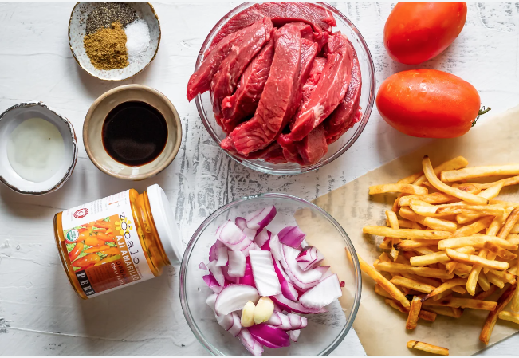

Lomo Saltado
Ingredients
Serves 2-3
Main Course:
- Tender Beef, 1 lb
- Red Onion, 1 sliced thick
- Cilantro, a few springs, chopped
- Soy Sauce, 1/4 cup
- Garlic, 1 cloves minced
- Wine wine, 1/4 Cup
- Red Wine Vinegar, 1 Tbsp
- Aji Amarillo: Is there such thing as too much?
- Tomatoes, 1 sliced thick
- Salt & Pepper, to taste
- Steak Fries
- White Rice, 2 cups
Accompaniments:
